Agent SpaceEvery effect a launch film needs: hooks, logo reveals, kinetic type, product UI, proof, transitions and end cards. Each one is rendered from code, ships with a copy-paste prompt and the original source, and passes automatic checks for legibility, overlap, contrast and determinism. No stock footage, no licensed music, no generative video.